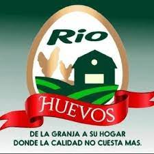

Projects

HUEVOS RIO


pagina creada desde 2023 con htlm
Ingeniero de Sistemas con una sólida formación académica y experiencia laboral en el diseño, desarrollo e implementación de soluciones informáticas. Apasionado por la resolución de problemas y la mejora continua, poseo habilidades técnicas avanzadas y un historial probado en la entrega exitosa de proyectos. Mi enfoque centrado en resultados y mi capacidad para trabajar eficazmente en equipos multidisciplinarios me han permitido contribuir de manera significativa al éxito de las organizaciones en las que he trabajado.
203 Random Ave
gags27090@gmail.com
3214281491